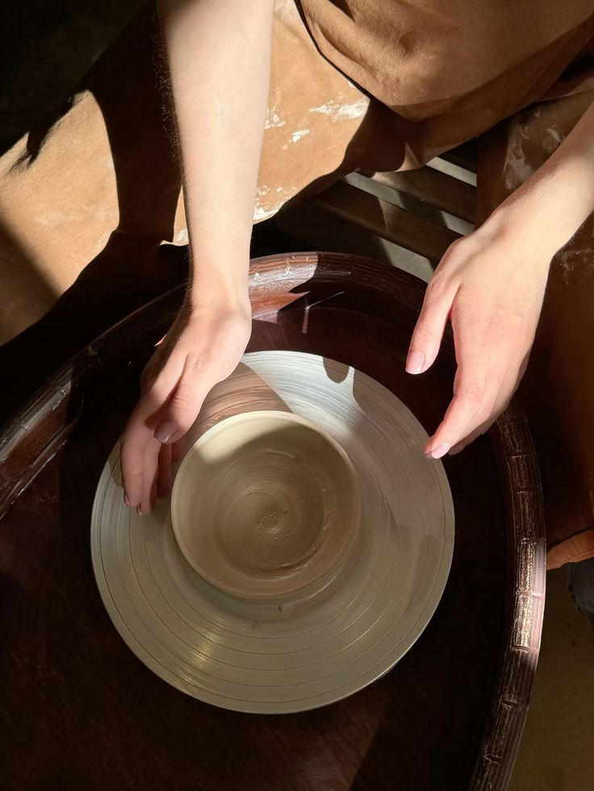

01 - Our Story
Klayé Studio merupakan sebuah brand kerajinan keramik yang menghadirkan berbagai produk handmade dengan menggabungkan kreativitas, seni, dan nilai fungsional. Berawal dari ketertarikan terhadap seni membentuk tanah liat, Klayé Studio hadir sebagai ruang untuk mengeksplorasi berbagai ide dan menuangkannya ke dalam karya keramik yang memiliki karakter tersendiri.
Setiap produk dirancang dengan memperhatikan bentuk, warna, tekstur, serta detail pengerjaan. Kami percaya bahwa keramik tidak hanya berfungsi sebagai benda yang digunakan sehari-hari, tetapi juga dapat menjadi bagian dari keindahan dan ekspresi personal dalam sebuah ruang.